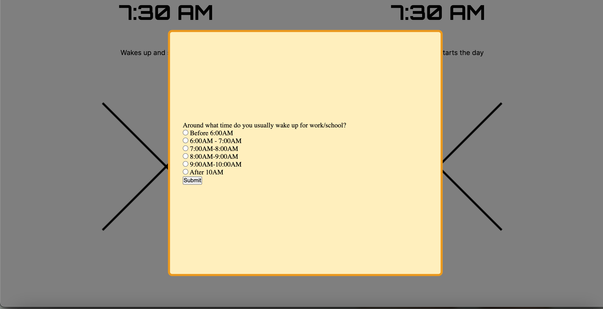

Pop-Ups Happen Too Quickly
The pop-up questions apearred suddenly and it was a little jarring for the user.
The pop-up questions apearred suddenly and it was a little jarring for the user.
It looked like the user was scrolling too fast through the story narrative.
Even though they did understand the big difference between the two narratives, they did not fully understand how the themes in both stories related to community, walkability, and happiness.
I will add a transition to my pop-ups so it appears less jarring; I may also add an implementation to prevent scrolling so that the user is forced to interact with the question. The scrolling preventation will also help the quick scrolling problem but also adding animation, pictures, and dynamic visual hiearchy will make the user scroll slower. For my last concern, I will add facts about both narratives along with facts from my bibliography in order to connect the themes with my main message.